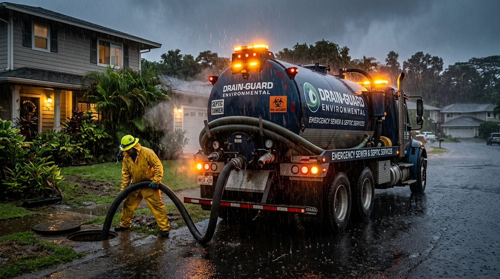

01 / STOP
Pause heavy water use
Stop washing machines, long showers and repeated flushing until the cause is checked. Continuing water use can push a stressed tank or pipe over the edge.
Slow drains after heavy rain, sewage smells near the yard or wastewater backing up indoors are not problems to ignore. Learn the first safe steps, spot the warning signs and arrange an assessment before a messy issue turns into an expensive one.

Prevent more wastewater from entering the system and avoid unsafe shortcuts.
Stop washing machines, long showers and repeated flushing until the cause is checked. Continuing water use can push a stressed tank or pipe over the edge.
Keep children and pets clear of pooled wastewater and suspiciously soft ground. Do not open or enter the septic tank yourself.
Note whether multiple fixtures are backing up, when the smell appeared and whether recent rainfall has soaked the drain field. Tell the team about tank access.
These clues can help distinguish a minor drain blockage from a broader septic system issue.
A little preparation before heavy rain is cheaper than improvising during a backup.
Check receipts or service notes. If you do not know when the tank was last serviced, book an inspection rather than guessing based on flushing speed.
Keep vehicles, stored materials and concentrated roof runoff away from the drain field. Compacted or flooded soil loses its ability to absorb wastewater.
Identify lids, clear the route for a vacuum truck and confirm road access. A crew cannot safely pump a tank it cannot locate or reach.
We collect symptoms, address, access conditions and urgency.
The crew checks the tank, connections and visible drainage risks.
Where appropriate, use mechanized pumping and recommend further inspection.
You receive findings, limitations and practical next steps.
Not always. Pumping reduces tank contents, but saturated soil may still be unable to accept wastewater. An inspection helps determine whether weather conditions, blockages or drain field damage are responsible.
Wastewater entering living areas needs prompt attention due to contamination risk. Stop using the plumbing, keep people away from affected areas and contact a qualified service provider for safe assessment.
Do not attempt to enter or lean into a tank. Septic gases and unstable covers pose serious hazards. Let trained operators with appropriate equipment handle access and inspection.
Tell us what you are seeing and we will help identify the safest next step. No tank entry, no guesswork.